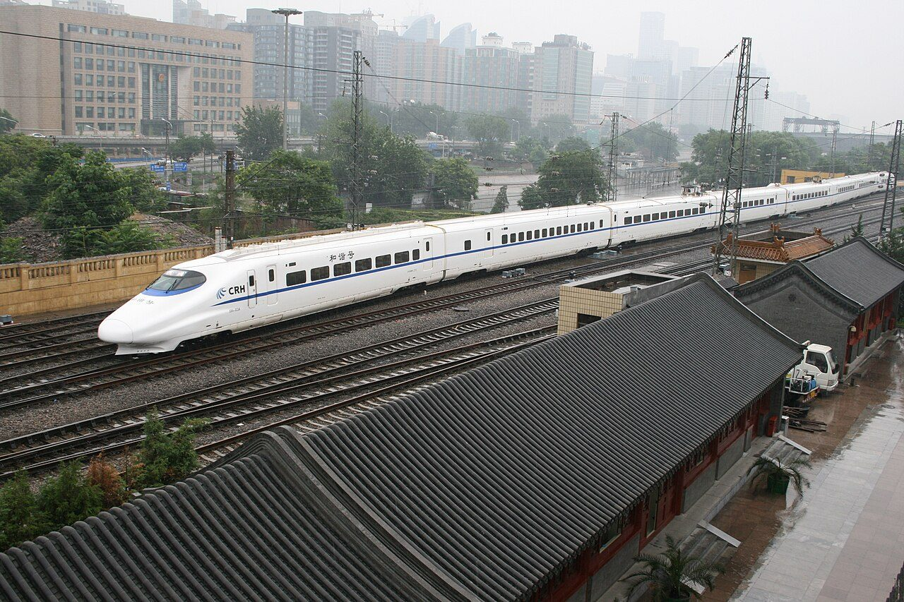
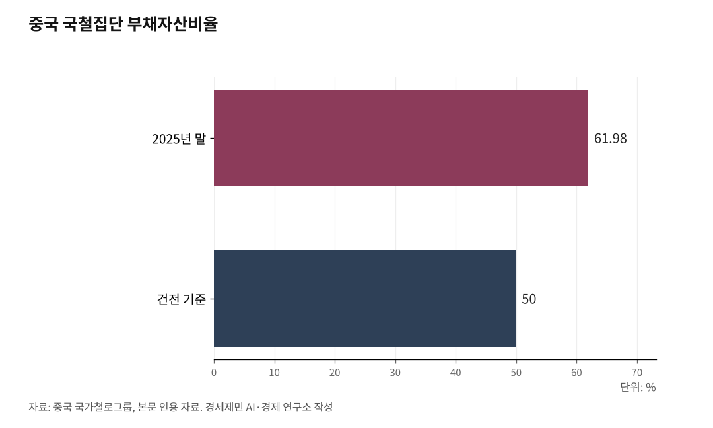

[중국철도⑧] 중국 고속철도의 두 얼굴, 성장 엔진과 재정 위기
도시 GDP 올리고 지역 격차 줄였지만, 소도시엔 사이펀 효과도
국철집단 부채 6조1700억위안, 6만㎞ 중 흑자 노선은 여섯뿐
루다다오 원사 "경제 논리 없는 과잉 건설" 정면 비판
중국 고속철도는 두 얼굴이다. 한편으로 도시 경제를 키우는 성장 엔진이고, 다른 한편으로 막대한 부채를 안은 재정 부담이다.

세계 최대 5만㎞ 망이 만든 성적표를 긍정과 비판 양쪽에서 읽어야 한다.
도시 GDP 올리고 격차 줄였다
긍정 효과는 여러 실증 연구에서 확인된다. 고속철 개통은 해당 도시의 1인당 실질 GDP를 끌어올렸고, 제조업 기반이 탄탄한 도시일수록 편익이 컸다.
동적 CGE 모델 분석에서도 철도 투자는 유발 수요와 생산 확대를 거쳐 경제와 사회 복지에 순 긍정 효과를 냈다.
지역 격차도 줄었다. 2000~2014년 패널 분석에서 고속철 확대 뒤 지니계수 같은 불평등 지표가 모두 내렸다. 동부와 북부에서는 철도망 밀도의 효과가, 중부와 서남부에서는 접근성 개선의 효과가 더 뚜렷했다.
다만 최근 연구는 한계수익 체감을 짚는다. 도시 규모에서는 협력적 발전을 낳지만, 개별 도시 단계에서는 효과가 줄어든다.
소도시엔 사이펀 효과
효과는 노선이 지나는 도시 구조에 좌우된다. 베이징~광저우 노선은 연선 도시 GDP를 올렸지만, 베이징~상하이 노선은 효과가 엇갈렸다.
오히려 손해를 본 곳도 있다. 일부 연구는 고속철이 경유 소도시의 고정자산 투자를 빨아들여 GDP를 3~5% 낮추는 사이펀 효과를 지적한다.
큰 도시가 작은 도시의 활력을 빨아들이는 역설이다.
부채 6조위안, 흑자 노선은 여섯뿐
재정은 심각하다. 국철집단 부채는 2024년 말 6조2000억위안에서 2025년 말 6조1700억위안으로 처음 줄었지만, 부채자산비율은 61.98%로 건전 기준 50%를 크게 웃돈다.
2025년 운수 총수입이 처음 1조위안을 넘었고 순이익은 43억위안으로 최고를 찍었다. 그러나 이 수치엔 화물과 재래선이 함께 들어 있어, 고속철 단독으로는 손실이 이어진다.
전문가들은 6만㎞ 가운데 흑자 노선은 베이징~상하이 등 여섯 정도이고, 나머지 80~85%는 적자로 본다. 2023년 한 재정 보도는 누적 고속철 부채가 6조위안을 넘고 연간 손실이 1000억위안에 이를 수 있다고 추산했다.
루다다오의 정면 비판
2025년 중국과학원 원사 루다다오(陸大道)가 낸 비판이 파장을 일으켰다. 그는 수요 없이 모든 지급시에 고속철을 잇는 정책을 경제 논리 없는 과잉 건설로 규정했다.
역사도 문제로 꼽았다. 도심에서 60~100㎞ 떨어진 외딴 역이 많아 이용이 불편하다는 것이다. 구이저우 퉁런남역은 도심에서 60㎞, 대중교통으로 한 시간이 넘는다.
그는 실제 연관 없는 소노선들을 하나의 통도로 묶어 중앙에 보고하는 방식도 꼬집었다. 8종8횡이라는 이름 아래 과잉 건설을 정당화했다는 비판이다.
그는 고속철이 채산을 맞추려면 세계은행 기준인 연 3500만~4000만명 수송 밀도가 필요한데, 대부분 노선이 이를 못 채운다고 지적했다.
지방정부 부채까지
루다다오는 지방 재정도 위험하다고 봤다. 대규모 인프라 건설로 지방정부 부채가 걷잡을 수 없이 불었다는 것이다.
그의 분석을 보면 10개 성의 부채가 재정수입의 5배를 넘고, 도시 3분의 1은 이자조차 못 낸다. 재래선 수입으로 고속철 손실을 메우는 구조도 전체 철도의 효율을 갉아먹는다고 그는 지적했다.
요금 인상이라는 딜레마
국철집단은 2024년 6월 경광·후쿤 고속철 같은 수익 노선의 공시 운임을 최대 20% 올렸다. 상하이~항저우 2등석이 73위안에서 87위안이 됐다. 흑자 노선이 적자 노선을 떠받치는 교차보조 구조다.
그러나 경기 둔화로 가격에 민감해진 소비자를 자극해 장기 수요 기반을 흔들 수 있다는 우려가 나온다.
2022년 국무원의 비상 브레이크 조치 뒤 중장거리 고속철 건설이 크게 억제됐다. 2035년 7만㎞ 목표도 사실상 재검토에 들어갔고, 소도시 단거리 노선 남설을 억제하는 정책 전환이 진행 중이다.
다만 위쿤·바오산 같은 핵심 간선 공정은 이어진다. 문제는 수요 없는 소도시 노선이지 간선망 자체가 아니다.
결국 관건은 루다다오 같은 내부 비판이 정책에 얼마나 반영되느냐다. 성장 엔진과 재정 위기라는 두 얼굴의 균형점을 어디서 찾느냐가 남은 과제다.
※ 이 기사는 AI 프로그램 클로드를 활용해 작성했습니다.

참고문헌
· "国铁集团净利润43亿元再创新高 负债率回落至铁道部时期水平", 新浪财经, 2026.5.1., https://finance.sina.cn/2026-05-01/detail-inhwktza5508731.d.html
· "China Railway's transport revenue tops 1 trillion yuan in 2025", 中国政府网, 2026.1.5., https://english.www.gov.cn/archive/statistics/202601/05/content_WS695baa20c6d00ca5f9a086c0.html
· "China's fast-growing high-speed railway network faces reality", Asia Times, 2025.6., https://asiatimes.com/2025/06/chinas-fast-growing-high-speed-railway-network-faces-reality/
· "China massively overbuilt high-speed rail, says leading economic geographer(루다다오 비판)", Pekingnology, 2025., https://www.pekingnology.com/p/china-massively-overbuilt-high-speed
· "陆大道院士发出疑问：高铁辉煌，高铁问题如何了？", 中国科学院(사후 재게재), 2025., https://www.sohu.com/a/905307616_121123688
· "Impact of high-speed rail on regional economic disparity in China", 학술논문, https://www.academia.edu/143206501/
· "Impacts of high-speed railways on economic growth and disparity in China", Lin et al., Transportation Research Part A, 2020., https://basc.berkeley.edu/uploads/2020/11/
사진 출처
· [대표사진] Gary Lee Todd, Ph.D., "China Rail Bullet Train - 9870869793.jpg", 위키미디어 공용, CC0, https://commons.wikimedia.org/wiki/File:China_Rail_Bullet_Train_-_9870869793.jpg
※ 이 기사는 인공지능을 활용해 작성했습니다.
관련기사
- [중국철도⑨] 중유반열의 성적표, 대외무역 성장과 구조적 한계
- [중국철도⑦] 제5차 국가철도망이 한국 대륙철도의 분수령
- [중국철도⑥] 한국이 들어선 국제 철도 통로는 다섯 가운데 둘
- [중국철도⑤] 중국 철도의 두 얼굴, 같은 나라 다른 시스템
저작권자 © AI경세제민 무단전재 및 재배포, AI학습 및 활용 금지